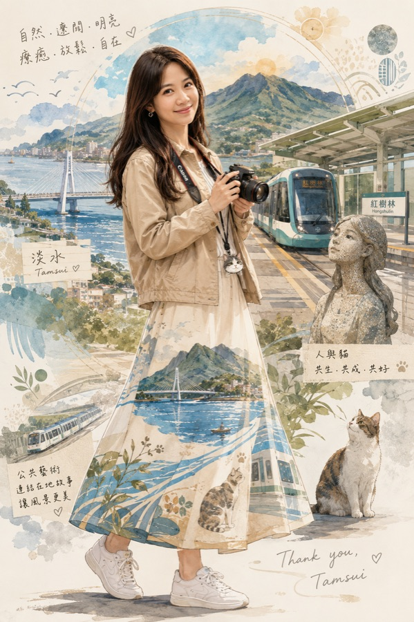
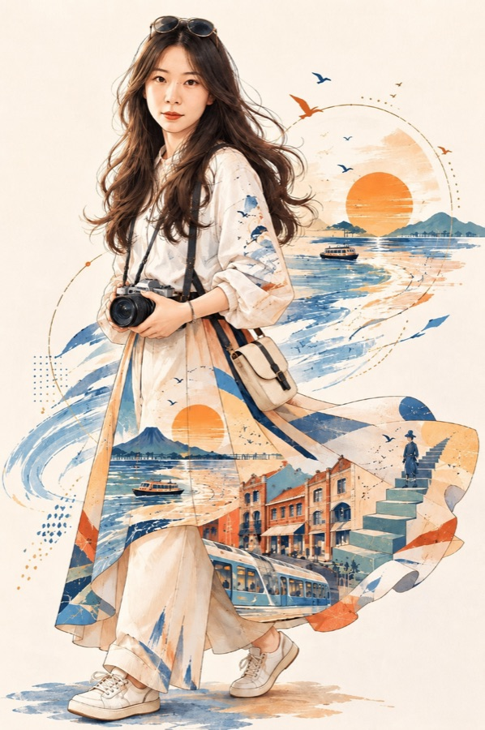
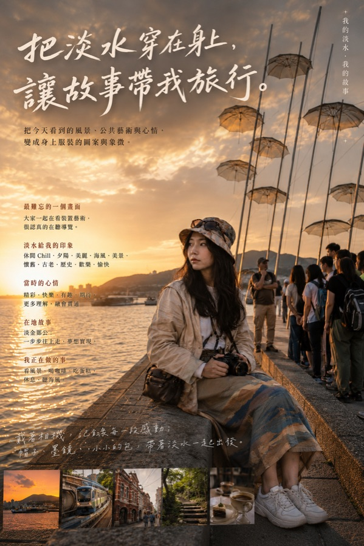
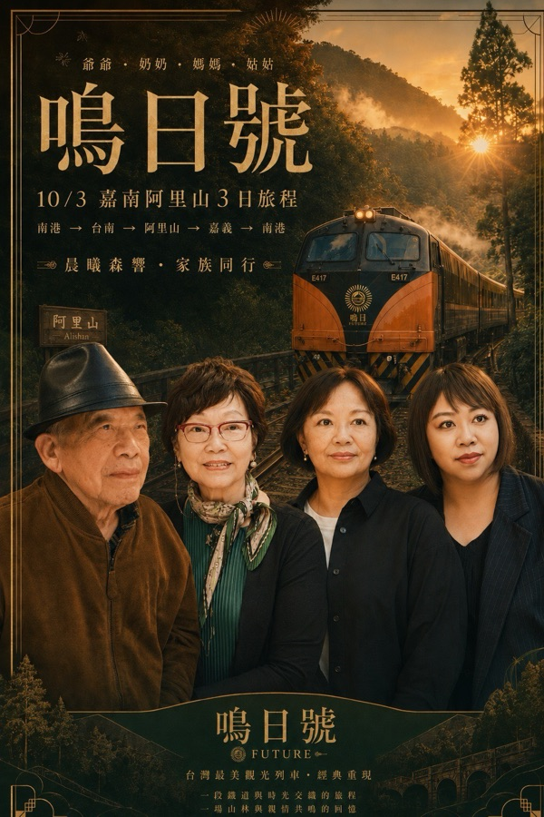

摘要。同一份指令發給一整班，有人做出來一眼就認得出是他本人，有人做出來像個陌生人。差別不在指令寫得漂不漂亮，在生圖之前你給了 AI 多少關於你的東西。這篇把兩場實體工作坊實際跑過的流程整理成可以自己在手機上照做的做法：先把個人設定做扎實，生出一張淡雅插畫版當手機桌布，再接一段指令把同一個人轉成寫實電影海報，最後把圖穩穩存回相簿。三份指令，直接複製就能用。
- 想做一張自己的圖當自我介紹、當手機桌面、印出來送人，但沒學過任何工具的人
- 帶長輩、社區班、親子場用 AI 的講師與助教，需要一份現場跑得動的流程
- 生過幾次圖，覺得每次都很漂亮但就是不像自己的人
- 第一步指令：兩次來回生出插畫版，中間有一張設定卡當確認關卡，做完直接當手機桌布
- 第二步指令：同一個對話往下貼，把同一個人轉成寫實電影海報，不用重做設定
- 一份簡單版指令，加上免費額度的四個省法與只改一小塊的修圖做法
想做出一眼認得出是你的，兩種成品都要：從下面的兩步法開始，大約多花十五分鐘。
講得細的那個人，圖明顯比較好
這篇整理自我在 2026 年 8 月連著兩天帶的兩場實體工作坊：8/20 樂齡 AI 故事工作坊，課程設定就是給完全沒碰過 AI 的人上的；8/21 淡海輕軌公共藝術走讀，一整天走六站，再把看到的東西變成作品。兩場都是一支手機、免費帳號、同一份指令發給全班。
8/21 那場最明顯的一件事是：講得細的那個人，圖明顯比較好。
這件事看得出來，是因為所有人拿到的指令一模一樣，差別只在填空。三個情緒詞只寫「開心」，跟寫下那天是雨過天晴、手上抱著什麼、站在哪一個月台，AI 拿到的東西差很多。它沒有偏心，只是把拿到的東西還回去。
兩種成品，是先後兩步不是二選一
很多人以為要先決定做哪一種。實際跑下來，這兩種是同一條線的兩步，做完第一張再接一段指令就有第二張。
底不要純白，用很淡的淺色底，上面放一點你講過的場景元素當延伸。人物全身置中，上方和中間留白，因為那裡會被時鐘和 App 圖示蓋住。這張本身就是最好的手機桌布。
同一個人、同一套衣服，換成實拍攝影的質感，放回真實的場景。上方大標題、下方幾行小字，排版要有張力。適合印出來、當自我介紹、放在社群當封面。

同一個人、同一次設定。左邊做完，同一個對話接一段指令就有右邊，不用重做。（8/21 淡海輕軌工作坊）
- 把淡水穿在身上，讓故事帶我旅行 ↗ 這是與淡水旅學堂合作開課的成果範例，一整天走六站、四組學員的作品都在裡面。
兩種都是直式 9:16。
第一步：先做個人設定，不要急著生圖
先確認你的照片可以用
臉正面、看得清楚、不要太暗。半身或全身都可以，不需要有風景，場景 AI 會生。手機裡現成的那張就行，不用特地去拍；今天的造型不滿意，用以前的照片也可以。
然後才是設定，不是生圖
這是整件事最關鍵、也最常被跳過的一步。
多數人的習慣是打開 ChatGPT、上傳照片、打一句「幫我做一張電影海報」，然後看它生出什麼。這樣做會拿到一張漂亮的圖，但那張圖裡的人可以是任何人。
正確的順序是先讓它認識你，再叫它動筆。做法是給它一張回答單，你一次填完，它整理成一張設定卡，你確認過了才生圖。
回答單裡要問的東西是固定的六項：最難忘的一個畫面、三個畫面詞、三個情緒詞、我正在做什麼、不希望出現什麼、一個代表我的小物件。
其中兩項特別值得說。
三個情緒詞是整張圖的靈魂。8/21 那場的做法是每個人先講出當下的三個感覺詞，例如「自在、放鬆、喜悅」「懷念、喜歡、開心」，作品從這三個詞長出來。有了情緒詞，AI 才知道光線要暖還是冷、姿勢要放鬆還是挺拔。
一個代表你的小物件是讓人一眼認出這是你的記號。常背的包、一台相機、一頂帽子、你養的貓都可以。想不到就寫「你幫我決定」。
進階一點的做法：把場景穿在身上
8/21 那場用的是一個比較特別的手法，值得單獨講。
把一個地方放進圖裡，通常會放在背景，人站在前面，風景在後面。那場的做法反過來：讓淡水河、觀音山、輕軌、街屋變成衣服上的圖案，像織進布裡，不是貼上去的貼紙。標題就叫「把淡水穿在身上，讓故事帶我旅行」。上面那兩張圖就是這樣做出來的，裙襬裡有河、有橋、有街屋。
這個手法可以直接搬走。想放進圖裡的不一定是淡水，可以是你待了二十年的那條街、每天散步的那條路、去過一次就忘不掉的城市。指令裡加一句「把我講的景物轉化成我身上服裝的圖案與象徵，圖案要像織進布裡，不是貼上去的貼紙」，出來的東西跟站在風景前面拍照完全不同。
衣服長什麼樣不用你描述，AI 會看你的照片和你講的話自己決定。
第一步指令：兩次來回就生出插畫版
先在對話框上傳一張自己的照片，再把這整段貼上去。這一份生出來的是淡雅插畫版，也就是可以直接當手機桌布的那張。
你是我的形象設計助教，陪我把一段自己的經歷做成一張以我為主角的插畫。
我會上傳一張自己的照片。
【最重要的規則：不要一題一題問】
你只問我兩次，第三步直接生圖。
第一次問：把下面那張回答單整份列給我，我一次填完。
第二次問：把設定卡給我，我確認。
我沒填的項目，你看照片和我講的話自己合理決定，
不要回頭追問，也不要中途生圖。
【第一次：把這張回答單整份列給我，列完就停】
A 我想放進這張圖的那段經歷，最難忘的一個畫面
B 三個畫面詞：那個地方給我的視覺印象（例如遼闊、明亮、古老）
C 三個情緒詞：我當時的心情（例如療癒、自在、驚喜）
D 如果把我畫進那個場景，我正在做什麼
E 不希望出現在畫面裡的東西（沒有就寫「沒有」）
F 一個代表我的小物件，當作畫面裡認得出我的記號
（例如常背的包、相機、一頂帽子。想不到就寫「你幫我決定」）
服裝與場景細節我不描述，你看我的照片和我上面講的話自己判斷。
【第二次：把設定卡給我，給完就停】
一張【我的形象設定卡】。用我的原話整理，不要幫我加我沒說過的事。
照片只記錄看得見的外觀，不要推測我的身分、職業或個性。
不用給我風格選項，畫面的感覺你依照我講的話自己決定。
然後等我回「設定卡確認」，我沒說之前不要生圖。
【第三步：生圖，不用再問我】
我說「設定卡確認」就直接生，只生一次，不要自動重生。
全身、淡彩插畫風格、人物置中。
保留我照片裡的五官特徵與髮型，要看得出是我本人，不要畫成通用的臉。
姿勢與動作可以配合我講的內容調整。
畫面裡放進我說的那個小物件。
把我講的景物、心情與故事，轉化成我身上服裝的圖案與象徵，
圖案要像織進布裡，不是貼上去的貼紙。
底不要純白。用很淡的淺色底，
底上放一點我講過的場景元素當延伸，水彩暈開那種感覺，
要非常淡，不要搶過人物。
留白要多，上方和中間不要放東西（那裡會蓋到手機的時鐘和圖示）。
比例 9:16 直式。
我說過不希望出現的東西不要出現，圖上不要文字、不要浮水印。- 同一份提示詞，三十個人做出三十種東西 這篇談的是你自己怎麼一步一步做完個人設定，那篇談的是講師怎麼把「先認識使用者」寫進提示詞裡，發下去讓三十個人各自長出自己的版本。
第二步：同一個人，轉成寫實電影海報
插畫版滿意了，就在同一個對話往下貼這一段。不用重傳照片，不用重講一次故事，它記得剛剛那個人長什麼樣、穿什麼衣服。
這一步做的事只有兩件：把畫風從插畫換成實拍攝影，把人放回真實的場景，然後加上海報該有的文字排版。
用剛剛那張圖裡的我，做一張電影海報版本。
人物不要換：臉、髮型、服裝上的圖案、配件、手上的東西都照剛剛那張，
就是同一個人、同一套衣服。
【畫風換成寫實】
真實攝影質感、實拍的光線、電影劇照的攝影構圖。
把我放回我前面講的那個真實場景裡：真實的街景、建築、天空與光線。
不要插畫感、不要濾鏡感。
角色的動作和姿勢你依照故事自己調整，要看起來像正在發生的一個瞬間。
【排版要有電影海報的張力】
上方放大標題：字要大、字體要設計過，可以壓在畫面上。
標題下方放兩到三行小字，講這張圖的故事。
角落放一行更小的字，放我的名字或這個地方的名稱。
【文字你自己寫，不要問我】
大標題從我前面講的話裡萃取，短，七個字以內最好，要像電影片名。
小字寫成旁白的口氣，像電影預告片那種敘事句，不要條列。
整體要有劇情感和故事性，讓人看了想知道這個人發生過什麼事。
比例 9:16 直式，不要浮水印。

大標題、旁白式的小字、角落的署名，都是 AI 從她前面講過的話裡萃取出來的。（8/21 淡海輕軌工作坊）
另一條路：不做兩步，五個空格直接生
上面那套兩步法要花時間。8/20 樂齡場的做法是另一條路：跳過設定卡，填五個空格一步到位，這時候海報和桌布就變成二選一。實際跑下來，多數人用下面這份就夠了，做出來一樣好看。
先上傳照片，再貼這段，括號裡填自己的就好。
這是我的照片。幫我做一張以我為主角的圖。
不用問我問題，照下面的關鍵字直接生。
想去的地方：（例如 法國、阿里山、京都、海邊）
季節或天氣：（例如 春天、黃昏、下過雨、下雪）
我正在做什麼：（例如 散步、喝咖啡、看風景、騎車）
喜歡的感覺：（例如 溫暖、清爽、復古、熱鬧）
要哪一種：電影海報 或 手機桌布（二選一）
我選電影海報的話：文字多一點，上方放片名，下方一行標語，
再加一行小字放我的名字，片名和標語你自己想。
我選手機桌布的話：畫面乾淨、留白多，上方和中間不要放東西
（那裡會蓋到時鐘和圖示），下方只放一句短短的話。
臉部表情和五官請盡量保持原樣，要看得出是我本人。
姿勢、背景、光線、服裝、排版都可以配合場景調整。
比例 9:16 直式。兩條路都在這裡，不用選邊。先用這份做出一張，想要更像自己、還想接著做海報版，再回頭走上面那套兩步法。
生出來不像我，怎麼改
生完看到的第一個反應常常是「這個跟我想的不一樣」。先分清楚是哪一種不像，兩種的救法完全不同。
畫面裡的東西不是你講的那些，場景不對、氣氛不對、小物件沒出現。回到設定卡改那幾行，再重生一次就好。
五官跑掉了。這一種要先知道：AI 不是修圖軟體，它每次都是重畫一張，五官很難百分之百還原。來源照片越清楚，越有機會靠近。
只改一小塊
在 ChatGPT 點進生成的那張圖，會看到編輯功能，有兩個特別好用。
移除：把不要的東西塗掉，AI 自動補上背景。在老街這種地方拍照，後面路人一堆，這招最實用。
註解：直接在圖上點那個位置，再說要改什麼。用嘴巴講「左上角」它常常會搞錯，點下去就不會。可以加字、換字的顏色和位置、換車子顏色、關掉車燈、笑容再多一點。
臉跑掉的救法
回一句「臉和五官回到我上傳的照片那張臉，其他可以改」。這句話通常會讓它靠近一點，但不保證一次到位，多試一兩次比較實際。
換風格不用重傳照片。說「用我剛才那張照片，改成某某風格」就好。
- AI 生的角色每次都不一樣：先把規格生出來，再叫它照做 這篇談的是一次生一張怎麼像你，那篇談的是同一個形象要在很多張圖裡維持同一個人，要先把規格固定下來。
免費額度是真的會用完，四個省法
免費版的生圖次數是隨機的。8/20 那場當天有人一次生了三張，有人第一張就滿了，同一份指令、同一個時間。這是各家廠商互相制衡下的常態，昨天可以今天不行很正常。要穩定就只有付費一條路。
在額度用完之前，有四件事可以省。
設定卡就是文字稿。畫面裡有什麼、心情是什麼、小物件是哪一個，在文字階段看一遍，不對就改那幾行。同樣一個錯，在文字階段改不用錢，生成之後改要再燒一次額度。
它已經在畫了，這時候插一句話，它會重新生一張，第一張就不見了，等於白白用掉一次。
免費版能傳的照片有限，四五個人不要一人一張，請旁邊的人幫忙拍一張合照，一張解決。合照生出來的海報，四個人都在裡面。
一樣的指令貼過去就好。8/20 現場實測：Gemini 給的次數大方很多，但幻覺明顯比 ChatGPT 多，畫質和質感也差一截，還沒給照片就先自己生了一張。當備援可以，當主力不行。
一張合照，全家都在裡面
這是省額度那四招裡最值得單獨講的一招，因為它同時解決兩件事。
免費版能傳的照片有限，一家四五個人如果一人生一張，額度撐不到第三個人。請旁邊的人幫忙拍一張合照，一張就解決。而且合照做出來的成品，比各自單飛的四張更有意思：它是一件事，不是四件事。

做法跟前面完全一樣，只有兩個地方要補：在回答單裡講清楚畫面裡有誰（例如爺爺、奶奶、媽媽、姑姑），還有這趟是什麼行程。片名、路線那幾行小字，AI 會從你講的內容裡自己排進去。
照片本身的兩個技巧
指令再好，來源照片不行也做不出東西。
會擺姿勢的人，成品特別好
這是 8/20 那場最明顯的一個發現。照片裡姿勢先擺好，等於直接給 AI 一份構圖參考，不會用文字形容也沒關係。
逆光的地方拍兩張
海邊夕陽逆光，人臉一定黑。做法是第一張拍背景，逆光的海和夕陽；第二張人稍微側到旁邊，找到有光的角度把臉拍亮，不要離太遠，離太遠場景會對不上。兩張一起丟給 AI 合成，因為原本就是真實照片、同樣的光線和場景，融合度非常高。代價是會用掉兩張額度，自己斟酌。
8/20 那場長出來的兩個玩法
把整趟行程的元素拼在一起，效果常常比單一場景好看。那場有位學員把埃及行程的金字塔、尼羅河遊輪、神殿全部放進同一張，成品比只放一個景點好。
合照可以加日期跟感想。以前跟朋友出去只能拍一張合照，現在可以把日期和當天的一句話一起放上去。這個做法一講出來，全班就拍手了。
最後一步最容易漏：把圖存回相簿
這一步沒做，前面全部白做。
傳給別人要先存相簿，再從 LINE 的相簿選圖傳出去。這樣傳出去的是圖片本身，對方一定看得到。傳到 LINE 群不等於存在你手機裡。
不要把對話刪掉。ChatGPT 左上角的選單可以看到所有對話，點回去就能看到當時生的圖。刪掉就找不回來了。
這件事真正在做的是什麼
做出一張圖只是結果。
兩場工作坊跑下來，留下印象最深的作品有一個共同點：作者講得出這張圖裡哪個地方是他自己決定的。8/21 有位學員把大學社團時期常經過淡江大學的那段青春，放進了層層堆疊的帽子與滑板女孩裡；8/20 有人的海報上寫著《追風的他》，片名是他自己下的。
AI 負責視覺、排版和光線，你負責那段只有你講得出來的事。你給它多少關於你的東西，它就還你多少像你的東西。這是為什麼這篇把個人設定放在生圖前面，而不把它當成一個可以跳過的暖身。
- 用 AI 把親子日常變成故事、插畫與家庭對話素材 這篇談的是一個人怎麼做自己的圖，那篇是一整場親子工作坊的完整記錄，同一段故事長出五種成品，最後回到家庭對話。
把你講得出來的事，變成看得到的東西
這套流程目前在各地的樂齡中心、社區大學、親子場與地方創生單位實際帶過。目前歡迎單位邀約合作，一整天或半天的場次都可以談，也可以依你們的主題調整成品的方向。
下面這個是與淡水旅學堂合作開課的成果範例，一整天走六站，四組學員的作品都在裡面：
我每月也固定舉辦兩場免費線上講座，主題都圍繞同一件事：怎麼把你腦中的經驗、故事與判斷，整理成 AI 用得上的素材。
單位邀約、課程規劃、想問這份指令怎麼改成你們的主題，都可以從社群找到我。免費講座場次也會先在這裡公布。
加入社群 ↗